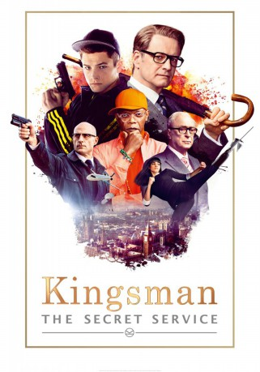

#982 Kingsman: The Secret Service
 gesehen am 20.05.2015
gesehen am 20.05.2015
 
 IMDB-Wertung: 7.7 / 10
IMDB-Wertung: 7.7 / 10  Metascore: 60
Metascore: 60 
Based upon the acclaimed comic book and directed by Matthew Vaughn, Kingsman: The Secret Service tells the story of a super-secret spy organization that recruits an unrefined but promising street kid into the agency's ultra-competitive training program just as a global threat emerges from a twisted tech genius.
Jahr: 2014
Dauer: 129 Minuten
FSK: 16
Land: England Studio: 20th Century Fox of GermanyTonspuren: DD5.1 - ,
Untertitel: , Englisch, Französisch, , ,
Auflösung: 1080p (1916x800) Größe: 5273 MB
Genre: Action, Abenteuer, Komödie, Thriller
Regisseur: Matthew Vaughn
Drehbuch: Jane Goldman, Matthew Vaughn, Mark Millar, Dave Gibbons
Soundtrack: Henry Jackman, Matthew Margeson
Darsteller:
 Colin Firth als Harry Hart / Galahad
Colin Firth als Harry Hart / Galahad Mark Strong als Merlin
Mark Strong als Merlin- Jonno Davies als Lee
 Jack Davenport als Lancelot
Jack Davenport als Lancelot Mark Hamill als Professor Arnold
Mark Hamill als Professor Arnold Velibor Topic als Big Goon
Velibor Topic als Big Goon Sofia Boutella als Gazelle
Sofia Boutella als Gazelle Samuel L. Jackson als Valentine
Samuel L. Jackson als Valentine Michael Caine als Arthur
Michael Caine als Arthur Taron Egerton als Gary 'Eggsy' Unwin
Taron Egerton als Gary 'Eggsy' Unwin Geoff Bell als Dean
Geoff Bell als Dean Theo Barklem-Biggs als Ryan
Theo Barklem-Biggs als Ryan- Tobi Bakare als Jamal
 Morgan Watkins als Rottweiler
Morgan Watkins als Rottweiler- Paul Kennington als Barman
 Ralph Ineson als Policeman
Ralph Ineson als Policeman- Edward Holcroft als Charlie
 Sophie Cookson als Roxy
Sophie Cookson als Roxy- Nicholas Banks als Digby
- Jack Cutmore-Scott als Rufus
 Nicholas Agnew als Nathaniel
Nicholas Agnew als Nathaniel- Rowan Polonski als Piers
- Tom Prior als Hugo
- Fiona Hampton als Amelia
- Hanna Alström als Princess Tilde
- Johanna Taylor als Valentine's Assistant 1
- Lily Travers als Lady Sophie
 Richard Brake als The Interrogator
Richard Brake als The Interrogator- Andrew Bridgmont als Kingsman Tailor
 Corey Johnson als Church Leader
Corey Johnson als Church Leader Anne Wittman als Church Blonde Woman
Anne Wittman als Church Blonde Woman- Andrei Lenart als Arctic Guard
- Chester King als Kingsman Knight
 David Olawale Ayinde als Rwandan Rebel , uncredited
David Olawale Ayinde als Rwandan Rebel , uncredited- Tom Bell als Doorman at Megan's , uncredited
 Paul Biddiss als Private army , uncredited
Paul Biddiss als Private army , uncredited Paulina Boneva als Shop Customer , uncredited
Paulina Boneva als Shop Customer , uncredited Jaymes Butler als Dean's Gang member #2 , uncredited
Jaymes Butler als Dean's Gang member #2 , uncredited- Jamie B. Chambers als Arctic Guard , uncredited
 Graham Curry als Police Officer , uncredited
Graham Curry als Police Officer , uncredited- Benjamin Dilloway als Doberman , uncredited
- Erica Emm als Britney , uncredited
- Yolandi Franken als Programmed Spectator , uncredited
 Kevin Fyfe als Valentines Secret Army Soldier , uncredited
Kevin Fyfe als Valentines Secret Army Soldier , uncredited Neve Gachev als Reporter , uncredited
Neve Gachev als Reporter , uncredited Alex Gillison als Rockstar , uncredited
Alex Gillison als Rockstar , uncredited- Claire Greasley als Shop Customer , uncredited
- James Harris als Dean's Gang Member / Church Congregation , uncredited
 Lee Nicholas Harris als Fireman , uncredited
Lee Nicholas Harris als Fireman , uncredited- Matt Harris als Churchgoer, Special Action , uncredited
Datei: X:\2-Dilogie(G-M)\Kingsman\Kingsman The Secret Service (2014, FSK16, 1916x800).mkv seit 02.05.2015
Festplatte: HD Collection-2(A-Z)-3(A-M)
 Alle Filme aus Gruppe '2-Dilogie(G-M)\Kingsman'
Alle Filme aus Gruppe '2-Dilogie(G-M)\Kingsman'